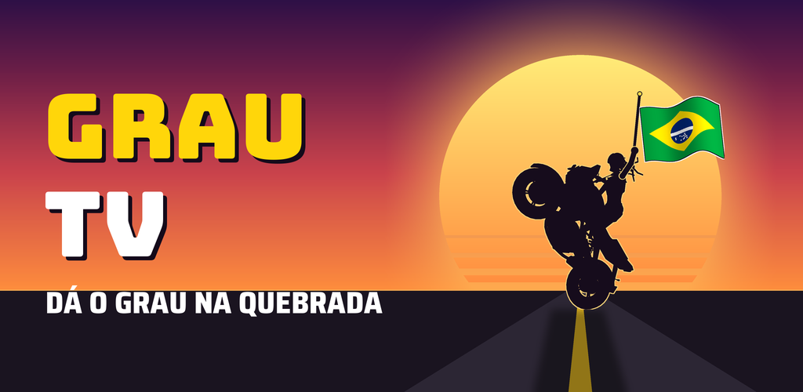

Grau TV
Dá o grau na quebrada: empina a moto, faz pose, segura o equilíbrio, foge da PM!

Google Play Vídeo / Video Baixar imagens (.zip)Ficha / Fact sheet
| Desenvolvedor / Developer | Zindie Game Studio (dev solo, Brasil) |
| Lançamento / Release | 15 de novembro de 2026 |
| Plataforma / Platform | Android (Google Play) |
| Preço / Price | Grátis, com anúncios opcionais / Free, optional ads |
| Gênero / Genre | Corrida, arcade de manobras / Racing, stunt arcade |
| Idioma / Language | Português (Brasil) |
| Classificação / Rating | 13+ |
| Feito com / Made with | GameMaker |
Descrição PT
Grau TV é um jogo 3D de grau de moto feito com a cara da quebrada brasileira: visual low-poly colorido, céu de pôr do sol, funk tocando e a galera na calçada assistindo. O objetivo é simples: sobe a frente e segura o equilíbrio o máximo que der. Quanto mais longe e mais estiloso o grau, mais pontos — e mais a galera vai à loucura.
- 10 poses durante o grau: sentado, em pé, no banco, pé no guidão, Cristo, Superman, amazona e mais
- Garupa: leve alguém junto — cada pose tem a ação da garupa
- Stoppie, borrachão com fumaça e desafios, incluindo uma fuga da PM com giroflex e sirene
- Caiu? Vira cinema: câmera lenta e replay estilo telejornal
- 3 lugares (quebrada, avenida, interior) e 4 horários do dia
- Personagem, cor da moto, motor 2T/4T, escape original ou aberto e 4 câmeras, incluindo primeira pessoa
Description EN
Grau TV is a 3D motorcycle wheelie game inspired by Brazilian street culture. In Brazil, "grau" is what we call wheelies — a big part of life in the neighborhoods, with funk music playing and people watching from the sidewalk. Lift the front wheel and hold your balance as long as you can: the longer and more stylish the wheelie, the more points you get.
- 10 poses during the wheelie, including Superman and standing on the seat
- Carry a passenger who reacts to every pose
- Stoppies, smoky burnouts and challenges, including a police chase
- Crashes turn into a slow-motion replay styled like a TV news report
- 3 locations, 4 times of day, rider and bike customization, 4 cameras including first person
Capturas / Screenshots


Logo e ícone / Logo & icon


Aviso / Note
Grau TV é um jogo. Não tente fazer essas manobras na rua: use capacete e respeite as leis de trânsito. A trilha sonora foi feita com ferramentas de música com IA; código, 3D e design são feitos à mão.
Grau TV is a game — please don't try these stunts on real streets. The soundtrack was made with AI music tools; code, 3D and design are hand-made.